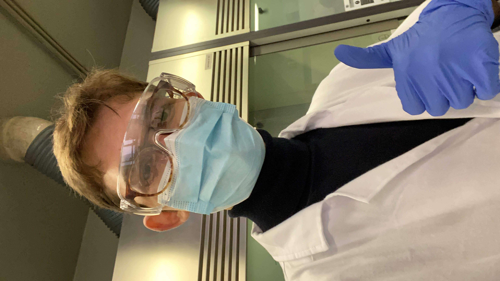

Davide: Many students and young researchers find themselves navigating two complementary yet distinct approaches: research, aimed at understanding phenomena, and engineering, focused on practical application. Are research and engineering really such different activities?
Guido: Absolutely, yes. They are profoundly different activities, and failing to recognize their distinct roles can become a barrier to innovation. Engineering has a clear goal, oriented toward practical realization. Research, on the other hand, is driven by a methodological, often theoretical impulse, and doesn't always have an immediate application. But it's precisely this freedom that allows great ideas to emerge. If researchers are expected to operate according to the same productive logic as engineers — with fast and measurable results — we end up stifling intuition and long-term vision, which are fundamental for breakthrough innovations.
Davide: So, is it better for research and engineering to remain separate?
Guido: Not necessarily. Real turning points often come precisely from the collaboration between these two worlds. But that collaboration only works if each maintains its own characteristics. The key is respecting the differences: the engineer applies, research explores.
Davide: Let's talk about the academic experience. Can a research path truly be a personal adventure, or is the academic environment too rigid to allow space for individual exploration?
Guido: It's true that the university has a rigid structure, with many predefined courses and standardized paths. But within those boundaries, there's also a great deal of freedom — especially once you enter the world of research. The key is to understand that you can choose how to do research, what to focus on, and which rules to follow. In a way, it's like choosing which "game" you want to play: each field has its own rules, but it's up to you to pick the one that best reflects your interests, your curiosity, your idea of intellectual adventure. Even in a system that may seem rigid, there is always space to shape a personal path. It takes courage, of course, but also awareness: research is not just about solving problems — it's about deciding which problems are worth asking.

Davide: How can one avoid getting lost in academic conformism, where it seems the only legitimate path is landing the most sought-after internship or the “right” job?
Guido: You need to stop constantly looking at what others are doing. [...] Conformism begins precisely when we stop asking ourselves what we truly want, and start focusing on what we “should” want, according to others. But figuring out what really motivates us is already a huge challenge — wasting time chasing external opinions and models only makes things more confusing. In the end, it's also a psychological matter: some people are more inclined to follow, others more inclined to chart their own course. But when it comes to important decisions — like your future — you have to learn to become the leader of yourself.
Davide: How can we resist the tendency to choose the easiest and safest path, whether in academia or in professional life?
Guido: There's no universal formula. What I do today is far from a well-trodden path — I built it from scratch, step by step. But it's not the novelty of the path that defines its value. Even a traditional route can be authentic, if it truly feels like your own. For me, the fundamental question is: “What helps you sleep well at night?” That's the real investment: the one that gives you peace, energy, motivation. Whether you choose academia, a startup, the arts, or finance, what matters is that the choice makes you feel alive — aligned with yourself. In my case, I chose the entrepreneurial path. Sometimes I sleep little, but not because of anxiety — because of excitement. It's a natural force that drives me. I don't care about the risks that come with it. And that, to me, is real success.
Davide: Do research paths truly offer a competitive advantage for those wanting to enter the startup world? Or are they at risk of being too tied to academic logic?
Guido: A researcher's skills — rigor, analysis, experimentation — are absolutely compatible with startups, but they need to be freed from the academic mindset. The risk is ending up in a cage: spending years in university spin-offs, in accelerators that don't accelerate anything, or in PhDs that hold you back more than they help. To build a startup, what you need first and foremost is freedom. Freedom to fail, to move, to set your own pace. Too many people today pretend to build startups: they live the form, but not the substance. To me, the real danger is exactly that — confusing mindset with outcomes.
Davide: How can someone know when the knowledge they've acquired is "enough” to start building something of their own — even at the cost of leaving university behind?
Guido: Personally, I don't believe in the dropout myth. For me, if you start something, you finish it. University, in the end, is a path: it may not be perfect, but if you've chosen to enter it, then follow it through with consistency. It's a matter of integrity toward your own choices. If you didn't want to play a certain game, maybe you shouldn't have started it in the first place. But if you chose to enter it, then be reliable all the way through. [...] At that point, the question is no longer just “how much do I know?”, but also “what kind of person do I want to be in how I approach my commitments?"
Davide: At this point, the natural question is: what do you think are the essential elements for generating real value in a company or project?
Guido: Talk to people. That's really the heart of it. If you start from an idea instead of a real problem, you're unlikely to get far. Many people fall in love with their solution and don't realize that no one actually needs it. And that often leads to projects that go nowhere. That's why I say: love the problem, not the solution. Understanding people's real needs — especially those you feel connected to, in whom you see yourself — is the starting point for creating value. It guides you toward something authentic. And then there's the team. A team isn't “good” by default: it only works if it's aligned with the goal. I've met exceptional people — truly brilliant — with whom I chose not to work again. Not because they weren't capable, but because the right conditions to build something together weren't there. And wasting time — your own and others' — is the worst mistake. [...] Another important truth is that everyone can contribute to the mission, if you find the right way to involve them. There's no such thing as a universally key role. Thinking that only certain skills matter is a form of arrogance. Some people are more analytical, others more empathetic, others more hands-on: it's the diversity of intelligences that makes a team strong — not uniformity.
Davide: Many entrepreneurs and researchers make decisions in a highly emotional way, especially in the early stages. How risky do you think that is? And when does it become necessary?
Guido: Honestly, I do everything out of emotion. But it's not blind emotion — it's thoughtful emotion. There's always deep reflection behind it, a vision of how I want to live and what I want to build. It usually starts as a gut feeling — an instinct — that I then analyze from both a theoretical and practical point of view: I ask myself whether it's sustainable, whether it can work in the real world. In the end, even the most visceral decisions have to reckon with limits: social, economic, physical. Emotion can guide you, but it has to confront reality. That's when you understand whether your intuition makes sense — or if it's just a dream.
Davide: How can a shift in perspective turn a mediocre idea into something innovative? Have you ever reflected on the importance of perspective in your work?
Guido: Absolutely. Perspective changes everything. It changes based on your internal model of the world, which in turn is shaped by the experiences you live through. When that model stops working — and I don't mean minor tweaks, but a true breakdown in coherence — that's the sign that you need a shift in your framework, possibly a deep one. The problem is, we often don't notice it right away. The decisions we make, the calculations we run, start to feel off, out of sync. But the root isn't a technical error — it's that we're still thinking with a mental map that no longer matches reality. In those moments, changing perspective isn't just helpful — it's necessary. And that's where real innovation can emerge.
Davide: In many sectors, innovation often clashes with rigid structures and the status quo. Do you think that truly entering a market today requires breaking equilibrium and creating disruption?
Guido: I don't think breaking the status quo is always the right move. Too often, I see people confusing disruption with revolution. The truth is, many rigid structures exist for a reason: they serve to filter noise — especially in sensitive fields like medicine or biotech. [...] The point isn't to be against the system. It's to understand it, internalize its logic, and then — only if you have the humility to fully grasp it — take the lead. When you place yourself at the head of a structure, you can truly change it from within. Changing things doesn't always mean breaking them. It means building something that works better — and climbing the existing rules until you're the one shaping them. Real impact comes more from strategic intelligence than from brute force.
The Future of Biotech Innovation Starts Here
We've seen how true innovation requires both respecting the differences between these approaches and being able to integrate them intelligently: the exploratory freedom of the researcher can become the spark for an entrepreneurial project; the pragmatism of the entrepreneur can give research a concrete and transformative direction. However, the meeting point between these two worlds only works if it's rooted in a solid vision, deep motivation, and genuine attention to real problems.